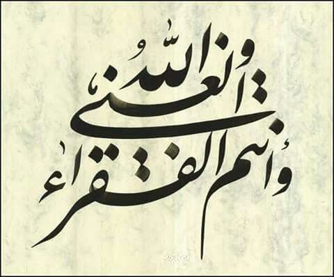

İçinde sert hükümler olan Muhammed suresi, müminlere infak çağrısı ile bitiyor. Allah'ın zenginliği, ancak kulların yoksul ve muhtaç oluşu ile anlaşılır: 
47:38
vallâhul-ġaniyyu veentumul-fukarâ
İşte siz Allah yolunda harcama yapmaya çağrılıyorsunuz, fakat içinizden bir kısmı cimrilik ediyor. Halbuki cimrilik eden ancak kendine karşı cimrilik etmiş olur; zira Allah zengindir, siz yoksulsunuz. Eğer hak çağrısına sırtınızı dönerseniz Allah sizin yerinize başka bir topluluk getirir; sonra onlar sizin gibi olmazlar.
Allah sadece kıyasla değil, mutlak olarak zengindir:
Ganî kelimesi, “zengin, kendi varlığıyla yetinip başkasına muhtaç olmayan, müstağni” anlamına gelir. ... Esmâ-i hüsnâdan biri olarak ganî'ye verilen bu mânalar şüphe yok ki Allah'a mahsustur ve ganiyy-i mutlak sadece O'dur. O'ndan başkasına izâfe edilen bütün zenginlikler aslında mevcut olan bir ihtiyacın giderilmesi anlamına geleceğinden nisbî ve mecazî bir nitelik taşır. Nitekim, “Zenginlik fazla servete sahip olmak değildir; asıl zenginlik gönlün ihtiyaç duygusundan uzak kalabilmesidir” (Buhârî, “Riḳāḳ”, 15; Müslim, “Zekât”, 120) meâlindeki hadis de buna işaret etmektedir.
Kaynak: İslam Ansiklopedisi
İkinci kelime zenginlikle yakından ilgili:
35:15
vallâhu huvel-ġaniyyul-hamîd
Ey insanlar! Allah'a muhtaç olan sizsiniz. Zengin ve övülmeye lâyık olan ancak O'dur.